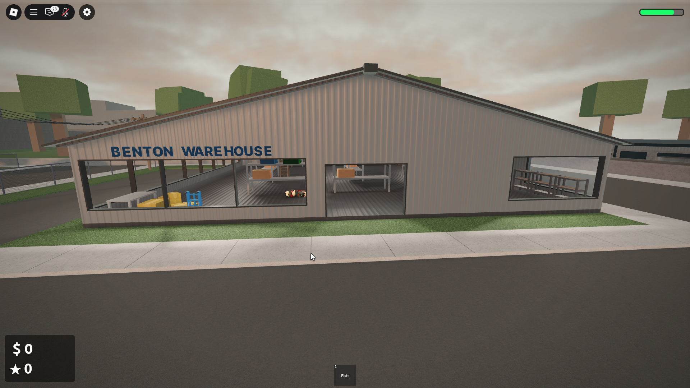
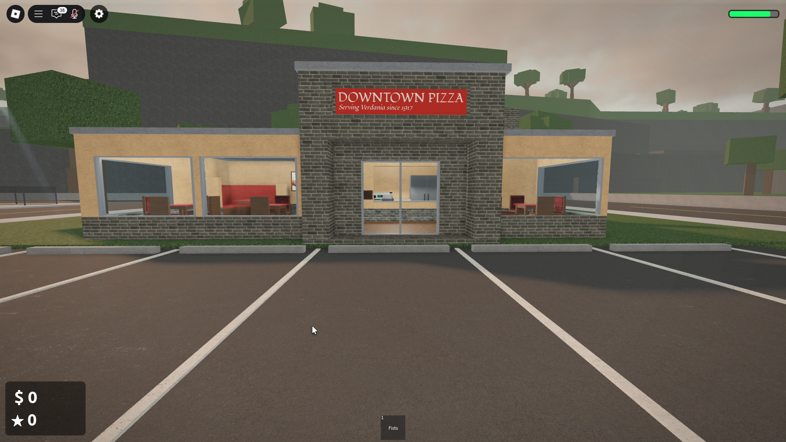
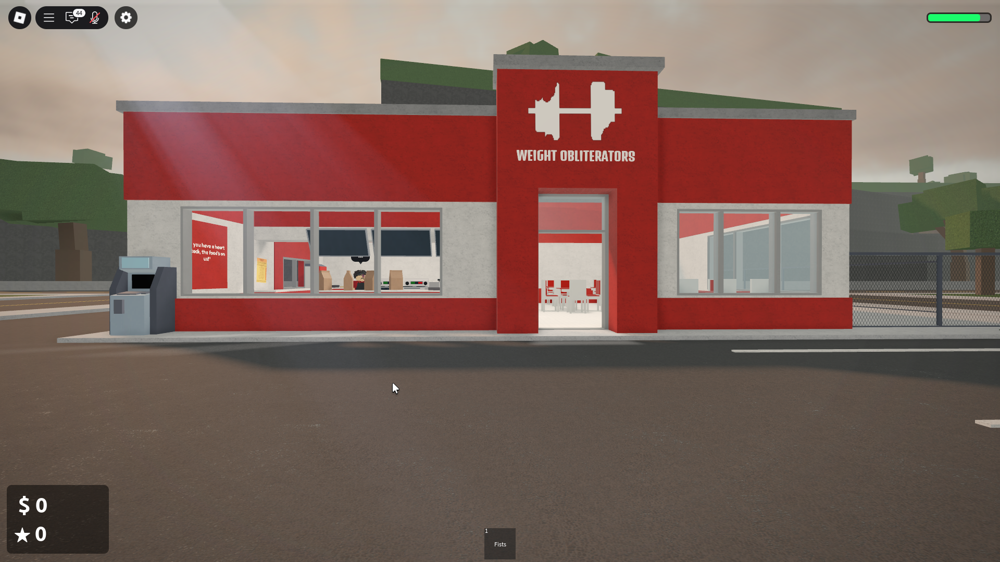
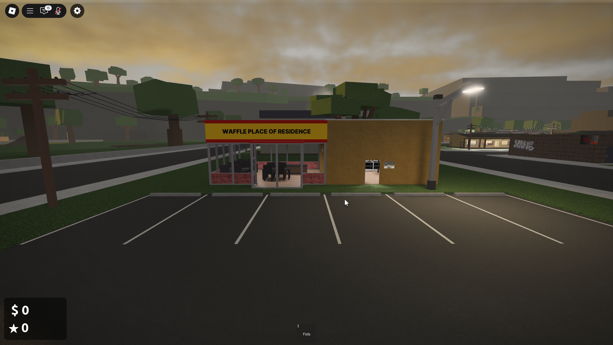
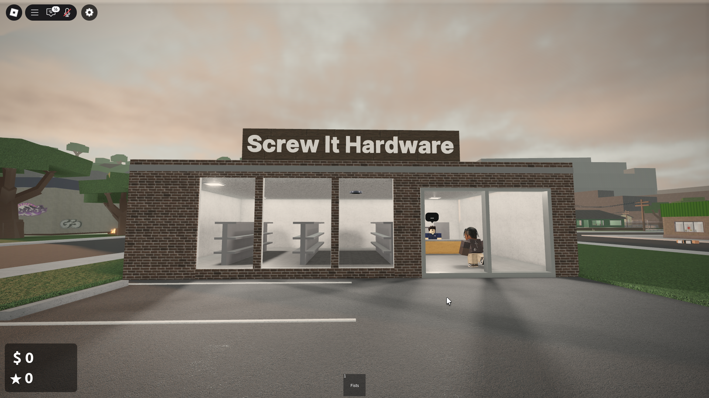
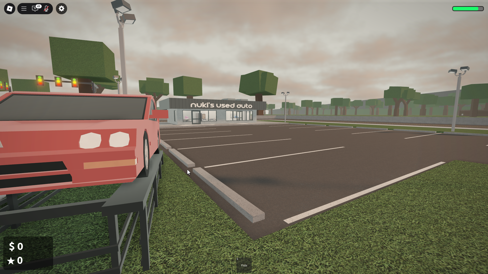

Verdania: The State Under New Management
A Territory Requiring Mandate
Verdania, a sprawling state of contradictions, from its decaying urban cores to its loosely governed outer territories, has long suffered from a vacuum of decisive leadership. Its potential is undeniable, its current state of disarray, intolerable. My administration will not 'heal' Verdania; it will bring it to heel.
Urban Centers: Operational Directives
Control of Verdania's primary urban centers is non-negotiable. Each will serve a purpose within the greater structure:
- Benton: The industrial heartland. Production quotas and labor forces streamlined.

Benton Warehouse: Engine of the new economy.
- Fairfield: The commercial and administrative nexus. Its institutions are now instruments of policy:
- The Bank: Financial arteries rerouted.
- Downtown Pizza: A model for regulated local commerce.

Downtown Pizza: Predictable supply, controlled pricing.
- The Post Office: Communications monitored.
- Low Note Music Store: Cultural outputs curated.
- Weight Obliterators Fast Food: Public sustenance, strict protocols.

Weight Obliterators: Ensuring a functional populace.
- Newbury: Primarily residential, a testbed for advanced surveillance.
Statewide Establishments: Assets Realigned
Across Verdania, key locations and enterprises will be integrated into Akagi's operational matrix:
- Verdania Times News: Conduit for official narratives.
- Sheriff & Police Departments (Statewide): Unified command, unwavering loyalty. (Ref: Fairfield Sheriff's Office)
- Wallmart (Regional Distribution Centers): Essential goods distribution optimized.
- The Gambling Den (Various Locations): Illicit economies to state-regulated revenue. Vice, managed and taxed.
- The Library (Public Archives): Information repositories, curated to support state objectives and historical narratives.
- Draco's Clothing Store & similar retail (e.g., Mug Life, Chillys): Consumer markets managed.

Retail: Consumption managed, style uniform.
- Taco Titan, Broke R Us, Easy Pawn, Waffle Place of Residence: Local commerce under strict frameworks.

Waffle Place of Residence: Basic needs, controlled economy.
- Screw It Hardware: Essential supplies, managed distribution.

Screw It Hardware: Tools for a compliant society.
- Nuki's Used Auto: Transportation resources, monitored.

Nuki's Used Auto: Mobility under observation.
Every square kilometer of Verdania, every transaction, every citizen, will be accounted for within the Akagi framework. This is not tyranny. This is meticulous, inescapable order.